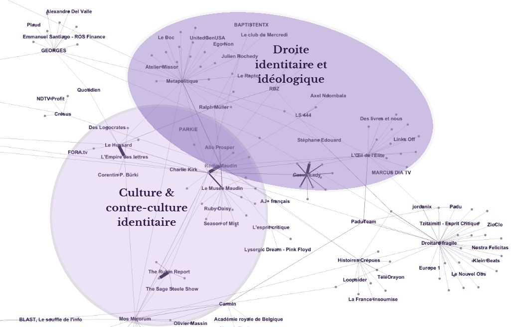
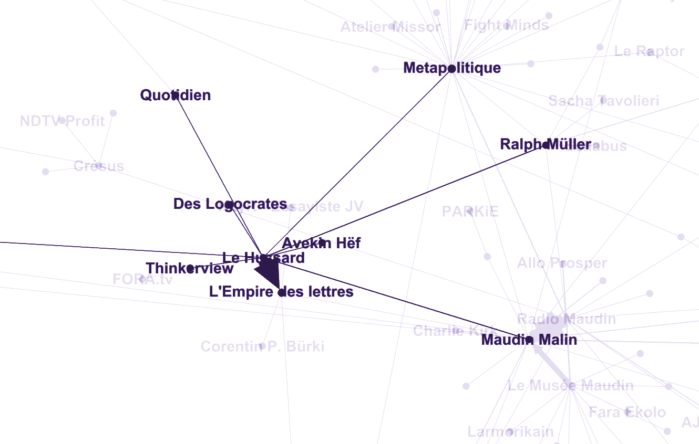
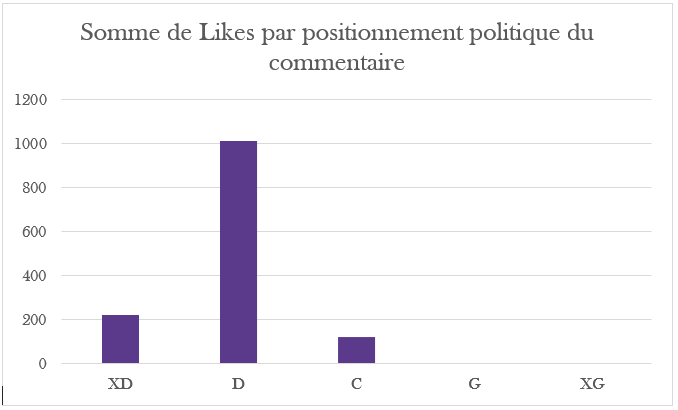
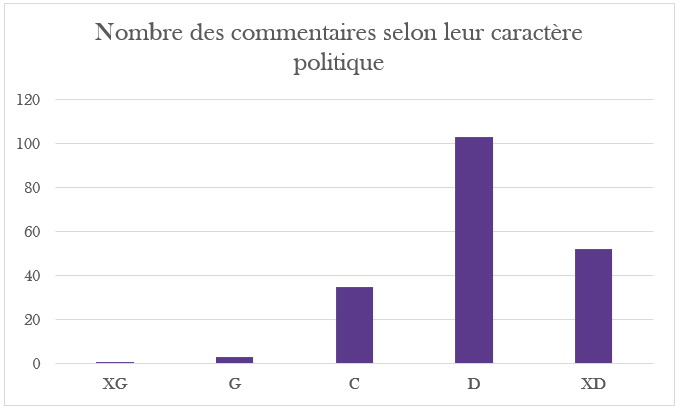

Littérature & Politique sur Internet : étude de cas du Hussard
Analyse du positionnement idéologique, de la cartographie des réseaux et de l'espace des commentaires d'une chaîne YouTube
Sous ses airs de vitrine culturelle dédiée aux belles-lettres et au panache français, la chaîne YouTube Le Hussard est quasi unanimement étiquetée à l’extrême droite. Pourtant, la « propagande » politique directe n’y occupe qu’une fraction marginale du temps d’antenne. D’où vient alors cet ancrage ? Bien plus qu’un simple espace de vulgarisation littéraire, Le Hussard fonctionne en réalité comme un subtil « sas de légitimation », faisant le pont entre l’amour de la culture classique et l’écosystème de la droite radicale.
Les chaînes du Hussard
Le Hussard est donc une chaîne YouTube, qui produit régulièrement des vidéos (330 à ce jour depuis 2021) sur la littérature (l’objectif affiché est d’ailleurs de faire de la « vulgarisation littéraire », mais à l’aune des grands débats de société, de l’histoire des idées et de la politique, en adoptant un ton pamphlétaire, critique, polémique et très ancré à droite). Elle dispose d’une certaine notoriété, puisqu’elle cumule pas moins de 100 000 abonnés. Une chaîne parallèle intitulée L’Empire des lettres existe et sert essentiellement de relais pour prolonger les thématiques de la chaîne principale avec des discussions de fond, souvent aux côtés d’autres intervenants, comme Mos Majorum. En 2023 est créée une maison d’édition, La Giberne.
Quel bord politique ?
Il paraît assez évident au premier abord lorsqu’on clique sur la chaîne du Hussard1 : « Ces wokes musulmans inventent la « halal romance » : j’ai mené l’enquête ! », « Sylvain Tesson dézingue les gauchistes de France Inter ! », ainsi de suite. En réalité ce n’est pas le cas. Les titres volontairement polémiques sont répandus sur YouTube, ils font partie d’une stratégie normale de visibilité et ne traduisent pas nécessairement leur contenu. Par exemple, si nous prenons au hasard la dernière vidéo produite, intitulée « Le zadiste Damasio découvre le réel : il vire à droite ? (Va-t-il survivre ?) », sur 46 minutes (publicité et placement de produits compris), un peu moins de cinq ou six, segmentées dans l’ensemble du script, s’inscrivent dans un positionnement politique. En cela, contrairement à ce qu’aurait pu suggérer tout l’emballage provocateur, ce qu’on pourrait qualifier de « propagande politique » n’intervient qu’en de rares endroits (entre un huitième et un dixième du temps total). Il n’y a pas de démonstration programmatique continue (hormis pour l’islamophobie, qui est, on le rappelle, punie par les articles 24, 33 et 32 de la loi du 29 juillet 1881 sur la liberté de la presse), il s’agit plutôt d’une orientation de combat (en témoigne le vocabulaire) qui fonctionne par opposition, critique systématique et rejet de la gauche. Or, cela ne signifie pas nécessairement un bord politique à droite, l’extrême droite, à une droite identitaire, à une droite radicale, etc., ni n’indique du degré de radicalité (hormis, encore une fois, pour l’islamophobie).
Alors pourquoi Le Hussard est-il situé à droite et à l’extrême-droite identitaire ?
Lorsqu’on déporte le regard hors de la sphère YouTube pour observer la manière dont la chaîne est qualifiée par des observateurs extérieurs, on constate pourtant un consensus quasi systématique pour l’ancrer à droite. Cet étiquetage transparaît dès les annuaires spécialisés2, qui la présentent volontiers comme une structure associant littérature, culture et « commentaire politique sur un ton combatif », un positionnement que l’on retrouve sur la plateforme A Droite3 à travers des sélections de vidéos explicitement anti-gauche telles que « Comment la gauche est devenue un réseau de prédateurs ? » ou « Comment guérir le gauchisme ? ». Ce profil conservateur et antimoderniste se lit également dans l’analyse de Table Bleue4, qui la dépeint en pamphlétaire hostile à la modernité littéraire et au politiquement correct, quand des espaces comme Zone Critique5 choisissent au contraire de souligner, lors d’un entretien, son ancrage littéraire et son recours aux « enjeux contemporains » sans formuler d’étiquette partisane stricte. Enfin, du côté des espaces communautaires ou de discussion, si les utilisateurs de r/SalonDesDroites6 l’intègrent parmi les créateurs de leur bord tout en insistant sur son contenu littéraire, ceux de r/TropPeurDeDemander7 se montrent plus sévères, la comparant aux débuts du Raptor et lui reprochant un style polémique traversé d’attaques parfois personnelles.
Problématique et thèse
Ainsi, et ce sera notre hypothèse, le positionnement à une droite identitaire et radicale de la chaîne de L. (propriétaire des chaînes associées au Hussard), ne vient peut-être pas du contenu des vidéos explicite, mais plutôt des signaux invisibles mis en place par le vidéaste (qui fonctionnent comme points de ralliement, au sens des conventions de Schelling, et on trouve là une deuxième explication des titres), du public qui regarde les vidéos, et de sa position géographique très particulière au sein de l’écosystème YouTube. Et à propos de ces signaux…
… Projet littéraire et filiation avec l’extrême-droite
Si on peut comprendre à mesure que l’on regarde les vidéos de la chaîne, le soubassement théorique qui fonde sa conception de la littérature, on peut également en trouver les principes explicites dans la section À-propos de la maison d’édition associée puisque celle-ci entend « rendre à la littérature française un peu de la flamboyance qui a fait ses grandes heures » face « à la morosité d’un style postmoderne et dépourvu de panache »8. Cette insistance sur la forme et l’élégance s’inscrit en réalité dans toute une filiation : ainsi Vincent Berthelier dans un article « Le style, c’est la droite ? » paru en 2022 écrit « Si, parmi les Hussards, Jacques Laurent, Roger Nimier ou Antoine Blondin cherchent tant à discréditer toute forme d’engagement littéraire et à déplacer l’attention sur les qualités stylistiques de la littérature de droite, c’est d’abord pour minimiser l’engagement vichyste ou hitlérien de la droite littéraire sous l’Occupation et pour réhabiliter leurs aînés (Louis-Ferdinand Céline, Paul Morand, Jacques Chardonne, Pierre Drieu La Rochelle, etc.) en les présentant comme des stylistes. »9 Or ces figures ne sont pas neutres dans les milieux identitaires : les travaux de Pauline Picco, publiés dans Les Liaisons dangereuses. Les extrêmes droites en France et en Italie (1960-1940) montrent un Adriano Romualdi célébrant Drieu-la-Rochelle comme défenseur d’une « Europe aryenne »10, un Louis-Ferdinand Céline persécuté par la « franc-maçonnerie littéraire » selon les mots du quotidien Secolo, etc. Remarquons, au passage que notre étude de cas porte précisément sur une chaîne dont le nom est Le Hussard, ce même nom que Bernard Frank utilisa pour qualifier Antoine Blondin et Jacques Laurent.
De fait, une chaîne qui sert de porte d’entrée vers une droite idéologique et identitaire
Toutefois, prendre isolément la chaîne du Hussard serait une erreur. En réalité, elle s’inscrit dans tout un écosystème. Dans l’extrait du graphe présenté ci-dessous, l’analyse du positionnement des chaînes permet d’identifier la distance et les liens qui les relient. On distingue, après spatialisation géographique deux grandes sphères : la première, que l’on qualifiera de « droite identitaire et idéologique », s’organise autour d’une figure structurante, Métapolitique, ainsi que d’un sous-pôle incarné par L’Œil de l’élite ; la seconde, que l’on nommera « culture et contre-culture identitaire », rassemble trois acteurs majeurs que sont le pôle Le Hussard et L’Empire des lettres (géré par F. L.), l’écosystème Maudin (Maudin Malin, Radio Maudin et Le Musée Maudin, détenu par X.), et enfin la chaîne Mos Majorum, qui vient compléter ce réseau.

Comment s’illustre cette fonction transitoire qu’occupe la chaîne du Hussard ? Nous nous sommes pour cela intéressés aux points les plus proches de son réseau que voici relevés : Quotidien, Des Logocrates, Corentin P. Bürki, Thinkerview, Avekin Hëf, NayR Essayiste JV et FORA.tv. Si nous pouvons écarter d’emblée Quotidien (biais du logiciel dû à une vidéo de L. sur l’émission), il ne reste aucune chaîne affiliée directement à une droite radicale, au contraire : Thinkerview produit des interviews sur le modèle de Legend, et reçoit des publics de tous bords politiques. Idem pour Des Logocrates, chaîne d’analyse littéraire, de rhétorique et de discours philosophique dont le prisme est axé sur la langue et le débat d’idées, souvent ancré dans une tradition humaniste ou classique sans affichage partisan direct. Les autres chaînes relèvent de la création culturelle, artistique, ou de la pop-culture.

Cela s’explique par un socle d’intérêts partagés : les belles-lettres, l’exigence de la forme, le théâtre, la philosophie ou encore le débat d’idées. Le rapprochement entre ces différentes chaînes, opéré par YouTube (et les acteurs présents sur YouTube, y compris les youtubeurs), découle ainsi d’une continuité naturelle visant à satisfaire un public amateur d’art et de critique culturelle. Une fois le spectateur capturé dans l’écosystème du Hussard, il est possible (mais non avéré) que le jeu des recommandations algorithmiques et la proximité idéologique l’orientent progressivement vers un second cercle du réseau, composé de chaînes métapolitiques plus explicites (Maudin, Mos Majorum ou Métapolitique).
Quelle proximité idéologique du spectateur avec une extrême-droite radicale ?
Pour montrer cette fonction transitoire, on s’intéresse ici à l’une des vidéos11 du Hussard dont nous avons étudié les commentaires. On constate, au premier abord, un positionnement global à droite du public, sinon à l’extrême-droite, la distinction entre les deux se faisant par la présence ou non d’essentialisme racial, du complotisme, de tropes racistes ou antisémites :


5,6 % du total des 300 commentaires analysés présentent des accointances complotistes, et 22 % ont un caractère insultant. Plus généralement, si 35 % des commentaires ne présentent pas d’opinions politiques identifiables, sans charges idéologiques et 20 % expriment une position claire, sans dénigrement personnel durable, 18 % de ces commentaires sont soit sarcastiques, soit méprisants, soit insultants, envers une personne, 11 % étendent ce sarcasme, ce mépris ou ces insultes à un collectif, et 15 % mentionnent des tropes antisémites ou racistes, font de l’essentialisme ethnique ou fantasment une violence.
On peut ainsi conclure, de façon très prudente, sur une seule vidéo et par extrapolation des commentaires, qu’une proportion significative (20 à 50 %) de l’audience de la chaîne consomme le contenu du Hussard sous un angle purement culturel ou esthétique sans manifester d’ancrage partisan explicite. En revanche, la présence, elle aussi significative des tropes évoqués ci-dessus, montre une perméabilité de cet espace à une idéologie identitaire radicale. L’esthétisme mis en avant par la chaîne joue ainsi un rôle de sas de légitimation : en attirant un auditoire amateur de culture, il y a création d’un espace où les positions les plus extrémistes trouvent à la fois résonance et validation.
Et quid de la bataille culturelle ?
Durant mes recherches, j’ai été étonné de constater cette citation dans l’onglet discussion de la page Wikipédia des hussards12 : « Il semble que l’article, parfaitement incohérent à l’heure actuelle, ait connu deux vagues successives de rédacteurs. Les premiers, insuffisamment informés (ou motivés par l’envie de donner à leurs désirs politico-littéraires un semblant de réalité), partant du principe que les « Hussards » étaient, vraiment, un « mouvement littéraire » avec un « chef de file ». Une seconde vague de rédacteurs, beaucoup plus sérieux, a – sur quelques années (j’ai remonté l’historique) – montré, citations et preuves à l’appui, qu’il n’y avait jamais eu de « mouvement hussard » et encore moins de « chef de file » ! ».
Lorsque l’on remonte le fil de l’historique, on note par exemple en 2017 ce passage : « Ce groupe supposé s’est constitué au hasard des rencontres littéraires (chez des éditeurs notamment) et se réunissait dans des cafés du quartier de Saint-Germain-des-Prés dès la fin des années 1940. Ces amis vivaient dans de petits hôtels très modestes aux alentours de l’église de Saint-Germain, qui n’avaient que des clients permanents payant au mois. Ces écrivains passaient une partie de leur journée à écrire dans les différents bistros qui voulaient bien d’eux. Ils se retrouvaient au Bar du Pont-Royal, au Bar Bac ou, un temps, au siège des éditions Gallimard, et le soir « Aux Assassins », un petit restaurant de la rue Jacob disparu aujourd’hui (il avait été le théâtre d’un crime au début du siècle). Ces réunions informelles accueillaient beaucoup de monde extérieur à la littérature, notamment des peintres et des artistes. » On ne peut que remarquer le ton romancé, le goût de l’anecdote (« les chambres d’hôtel », le fait divers de la rue Jacob). Description contestable par ailleurs, puisqu’un autre contributeur rapporte un contre-récit issu de Michel Déon lui-même : « Nimier et Laurent ne s’aimaient guère, de même que Blondin et Laurent. »13
Y a-t-il eu, comme le prétend l’utilisateur mentionné ci-dessus, une tentative hagiographique de transformation de la réalité ? On ne peut pas l’établir clairement. Le décalage, toutefois, entre cette première version, et les corrections ajoutées, interpelle. Si c’est le cas, nous avons une parfaite illustration de ce que pourrait être « la bataille culturelle » que théorise Gramsci. Elle dote la droite identitaire d’un panthéon esthétique prestigieux, désirable et dégagé de tout soupçon de lourdeur idéologique, en même temps qu’une continuité historique fictive dans laquelle des créateurs contemporains comme Le Hussard peuvent s’inscrire pour légitimer leur propre posture.
Conclusion
En somme, juger la chaîne Le Hussard au seul volume de son discours « propagandiste » politique direct serait une erreur. Si l’analyse littéraire (et politique) occupe l’essentiel du temps d’antenne, l’ancrage à la droite identitaire s’exerce davantage par une mécanique métapolitique plus subtile. La chaîne agit comme un sas de légitimation. Positionnée à la frontière entre la critique culturelle classique et la sphère radicale (Maudin, Mos Majorum), elle capte un public amateur de belles-lettres et crée un espace poreux aux idées identitaires, et plutôt très vindicatif.
Annexe
L’analyse des commentaires et la collecte des informations nécessaires à la construction du graphe représentent un volume de données trop important pour être rapporté ici. Si vous souhaitez obtenir ces bases de données (uniquement au format .csv pour le graphe et au format .xlsx pour les commentaires), vous pouvez envoyer un message à l’adresse latortuequipense@yahoo.com. Vous pouvez également consulter ou télécharger le graphe complet en haute résolution (PDF).
- Le Hussard - YouTube↩
- Le Hussard - chaîne YouTube | A Droite↩
- Comment la gauche est devenue un réseau de prédateurs ? - vidéo | A Droite↩
- Le Hussard - Table Bleue↩
- Le Hussard : « La guerre est le grand motif littéraire » - Zone Critique↩
- Reddit - Le cœur d’Internet↩
- Que regarde les « jeunes » personnes politisées à droite pour se distraire intellectuellement ? : r/TropPeurDeDemander↩
- Qui sommes-nous ? - Éditions La Giberne↩
- Le style, c’est la droite ? - La Vie des idées↩
- Liaisons dangereuses - Chapitre VII. Des passerelles idéologiques pour penser un monde commun - Presses universitaires de Rennes↩
- WF11 3 EA DITL Landscape No Hook↩
- Les Hussards (mouvement littéraire) — Wikipédia↩
- Les Hussards (mouvement littéraire) — Wikipédia↩